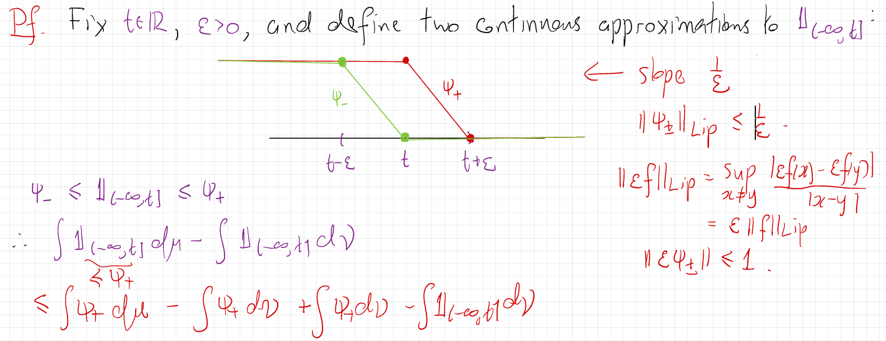

61 Lecture 28.1: Metrics on Probability Measures
61.1 Dual Probability Metrics
Let \(\mathcal{P}(S, \mathcal{B})\) denote the set of probability measures on a measurable space \((S, \mathcal{B})\). A general class of (dual) probability metrics is generated by a family of test functions \(\mathcal{H}\) on \(S\): \[ d_{\mathcal{H}}(\mu, \nu) = \sup_{h \in \mathcal{H}} \left| \int_S h \, d\mu - \int_S h \, d\nu \right|. \] Assume that every \(h\in\mathcal{H}\) is measurable and integrable with respect to every measure under consideration. Then this expression defines a pseudo-metric. It is a genuine metric when \(\mathcal{H}\) separates probability measures, meaning that \[ \int_S h\,d\mu=\int_S h\,d\nu\quad\text{for every }h\in\mathcal{H} \quad\Longrightarrow\quad \mu=\nu. \]
In terms of random variables, if \(X\) and \(Y\) are \(S\)-valued random variables with laws \(\mu\) and \(\nu\), respectively, then \[ \begin{aligned} d_{\mathcal{H}}(\mu, \nu) &= \sup_{h \in \mathcal{H}} |\mathbb{E}[h(X)] - \mathbb{E}[h(Y)]| \end{aligned} \]
61.2 Total Variation Distance (\(d_{\text{TV}}\))
The Total Variation metric uses bounded measurable functions with supremum norm \(\|h\|_\infty \le 1\), where \(\|h\|_\infty = \sup_{x \in S} |h(x)|\): \[ \begin{aligned} d_{\text{TV}}(\mu, \nu) &= \sup_{B \in \mathcal{B}} |\mu(B) - \nu(B)| \\ &= \frac{1}{2} \sup_{\|h\|_\infty \le 1} \left| \int_S h \, d\mu - \int_S h \, d\nu \right|. \end{aligned} \]
- Total variation distance is generally too strong to capture weak convergence of probability measures.
If \(X\) and \(Y\) are \(S\)-valued random variables with laws \(\mu\) and \(\nu\), respectively, then \[ \begin{aligned} d_{\text{TV}}(X, Y) &= \sup_{B\in\mathcal{B}} |\mathbb{P}(X \in B) - \mathbb{P}(Y \in B)|\\ &= \frac{1}{2} \sup_{\|h\|_\infty \le 1} |\mathbb{E}[h(X)] - \mathbb{E}[h(Y)]|. \end{aligned} \]
61.3 Kolmogorov Metric (\(d_{\text{Kol}}\))
Defined on \(\mathcal{P}(\mathbb{R}, \mathcal{B}(\mathbb{R}))\), the Kolmogorov metric measures the uniform distance between cumulative distribution functions (CDFs): \[ \begin{aligned} d_{\text{Kol}}(\mu, \nu) &= \sup_{t \in \mathbb{R}} |F_\mu(t) - F_\nu(t)| \\ &= \sup_{t \in \mathbb{R}} \left| \int_{\mathbb{R}} \mathbf{1}_{(-\infty, t]} \, d\mu - \int_{\mathbb{R}} \mathbf{1}_{(-\infty, t]} \, d\nu \right|. \end{aligned} \]
61.4 Wasserstein \(L^1\) Distance (\(d_{W_1}\))
Define \[ \mathcal{P}_1(\mathbb{R}) := \left\{\mu\in\mathcal{P}(\mathbb{R},\mathcal{B}(\mathbb{R})): \int_{\mathbb{R}}|x|\,d\mu(x)<\infty\right\}. \] For \(\mu,\nu\in\mathcal{P}_1(\mathbb{R})\), the \(1\)-Wasserstein distance uses the class of \(1\)-Lipschitz functions \(\operatorname{Lip}_1(\mathbb{R})\). Its Lipschitz seminorm is \[ \|f\|_{\mathrm{Lip}}:=\sup_{x\ne y}\frac{|f(x)-f(y)|}{|x-y|}. \] \[ d_{W_1}(\mu, \nu) = \sup_{\|f\|_{\text{Lip}} \le 1} \left| \int_{\mathbb{R}} f \, d\mu - \int_{\mathbb{R}} f \, d\nu \right|. \]
The \(W_1\) topology is stronger than weak convergence. More precisely, \[ \begin{aligned} &d_{W_1}(\mu_n,\mu)\to0\\ &\Longleftrightarrow\quad \mu_n\Rightarrow\mu \quad\mathrm{and}\quad \int_{\mathbb{R}}|x|\,d\mu_n(x)\to\int_{\mathbb{R}}|x|\,d\mu(x). \end{aligned} \]
Thus, weak convergence together with convergence of the first absolute moments is exactly what is required for convergence in \(W_1\).
There is also a very useful equivalent formulation in terms of random variables. If \(X_n\sim\mu_n\) and \(X\sim\mu\), then \[ d_{W_1}(\mu_n,\mu)\to0 \quad\Longleftrightarrow\quad X_n\Rightarrow X \text{ and } \mathbb E|X_n|\to\mathbb E|X|. \]
Example 61.1 An important subtlety is that weak convergence plus bounded first moments is not sufficient. For example, if \[ X_n= \begin{cases} n,&\text{with probability }1/n,\\ 0,&\text{with probability }1-1/n, \end{cases} \] Let \(F_n\) be the CDF of \(X_n\). For any \(x\), \(F_n(x)=\mathbb P(X_n\leq x)\). Consider the different cases:
- If \(x<0\), then \(F_n(x)=0\).
- If \(0\leq x<n\), then the value \(0\) is included but \(n\) is not, so \(F_n(x)=1-\frac1n\).
- If \(x\geq n\), then both possible values are included, so \(F_n(x)=1\).
Thus, for every fixed \(x>0\), once \(n>x\), \(F_n(x)=1-\frac1n\longrightarrow1\). For \(x<0\), \(F_n(x)=0\). The CDF of the degenerate random variable \(0\) is \[ F(x)= \begin{cases} 0,&x<0,\\ 1,&x\geq0. \end{cases} \] Therefore, \(F_n(x)\to F(x)\) at every continuity point of \(F\), i.e. at every \(x\neq0\). Hence, by the CDF characterization of weak convergence, \(X_n\Rightarrow0\).
Also, note that \(\sup_n\mathbb E|X_n|=1\), but \(\mathbb E|X_n|=1\not\to0=\mathbb E|0|\). Hence \(d_{W_1}(\mathcal L(X_n),\delta_0)\not\to0\). This is a particularly nice example explaining that why \(W_1\) is strictly stronger than weak convergence.
Theorem 61.1 (Representations of \(d_{W_1}\)) For \(\mu,\nu\in\mathcal{P}_1(\mathbb{R})\), let \(F_\mu\) and \(F_\nu\) denote their cumulative distribution functions. A coupling of \((\mu,\nu)\) is a pair of real-valued random variables \((X,Y)\), defined on a common probability space, such that \(X\sim\mu\) and \(Y\sim\nu\). Then
\[ \begin{aligned} d_{W_1}(\mu,\nu) &= \sup_{\|f\|_{\mathrm{Lip}}\leq1} \left| \int_{\mathbb{R}}f\,d\mu - \int_{\mathbb{R}}f\,d\nu \right|\\ &= \int_{-\infty}^{\infty} |F_\mu(t)-F_\nu(t)|\,dt\\ &= \inf \left\{ \mathbb{E}|X-Y|: (X,Y)\text{ is a coupling of }(\mu,\nu) \right\}. \end{aligned} \]
The first equality is the dual formulation, the second is the CDF representation, and the third is the primal (transport) formulation of the \(1\)-Wasserstein distance.
Remark 61.1. \(d_{W_1}\) can be viewed from three different perspectives
- Distributional perspective: \(\int_{\mathbb R}|F_\mu(t)-F_\nu(t)|\,dt\). It measures the area between the two CDFs.
- Functional perspective: \(\sup_{\|f\|_{\mathrm{Lip}}\le1} |\mathbb E_\mu[f]-\mathbb E_\nu[f]|\). It asks: How different can expectations be when tested with functions that cannot change too rapidly?
- Probabilistic/transport perspective: \(\inf_{(X,Y)}\mathbb E|X-Y|\). It asks: What is the smallest possible expected distance between random variables having the two prescribed distributions?
The theorem says these three answers are exactly the same.
61.5 Controlling Kolmogorov Distance via Wasserstein Distance
The following theorem provides a bound on the Kolmogorov distance in terms of the Wasserstein distance.
Theorem 61.2 (Kolmogorov–Wasserstein Inequality) Let \(\mu,\nu\in\mathcal{P}_1(\mathbb{R})\), and suppose that \(\nu\) has a density \(\rho\) with respect to Lebesgue measure satisfying \(\nu(dx)=\rho(x)dx\) and \(0\leq\rho(x)\leq C<\infty\) for Lebesgue-almost every \(x\). Recall that the Kolmogorov distance is \[ d_{\mathrm{Kol}}(\mu,\nu):=\sup_{x\in\mathbb R}|F_\mu(x)-F_\nu(x)|. \] Then \[ d_{\mathrm{Kol}}(\mu,\nu) \leq 2\sqrt{C\,d_{W_1}(\mu,\nu)}. \]
Remark 61.2. The two distances measure different aspects of the discrepancy between \(\mu\) and \(\nu\): \(d_{\mathrm{Kol}}(\mu,\nu) = \sup_x|F_\mu(x)-F_\nu(x)|\) measures the largest vertical discrepancy between the CDFs, whereas \(d_{W_1}(\mu,\nu) = \int_{\mathbb R}|F_\mu(x)-F_\nu(x)|\,dx\) measures the total area between the CDFs.
The theorem says that if \(\nu\) has a bounded density, then a small amount of total area forces the maximum vertical discrepancy to be small: \[ \boxed{ d_{W_1}\text{ small} \quad\Longrightarrow\quad d_{\mathrm{Kol}}\text{ small}. } \] The bounded-density assumption is what makes this possible. It prevents \(F_\nu\) from changing arbitrarily rapidly.
Proof (Proof of Theorem 61.2). Fix \(t \in \mathbb{R}\) and \(\epsilon > 0\). Construct continuous linear approximations \(\psi_-, \psi_+\) to the indicator function \(\mathbf{1}_{(-\infty, t]}\): \[ \psi_- \le \mathbf{1}_{(-\infty, t]} \le \psi_+. \] Define \[ \psi_+(x)= \begin{cases} 1,&x\le t,\\ \dfrac{t+\epsilon-x}{\epsilon},&t<x<t+\epsilon,\\ 0,&x\ge t+\epsilon, \end{cases} \qquad \psi_-(x)= \begin{cases} 1,&x\le t-\epsilon,\\ \dfrac{t-x}{\epsilon},&t-\epsilon<x<t,\\ 0,&x\ge t. \end{cases} \] We can illustrate this construction as follows:

The slope of \(\psi_+\) is \(\frac{1}{\epsilon}\), so \(\|\psi_+\|_{\text{Lip}} \le \frac{1}{\epsilon}\). Scaling gives \(\|\epsilon \psi_+\|_{\text{Lip}} \le 1\).
Bounding the distribution function difference: \[ \begin{aligned} \mu((-\infty, t]) - \nu((-\infty, t]) &\le \int \psi_+ \, d\mu - \int \mathbf{1}_{(-\infty, t]} \, d\nu \\ &= \int \psi_+ \, d\mu - \int \psi_+ \, d\nu + \int (\psi_+ - \mathbf{1}_{(-\infty, t]}) \, d\nu \\ &\le \frac{1}{\epsilon} d_{W_1}(\mu, \nu) + \int_{t}^{t+\epsilon} \psi_+(x) \rho(x) \, dx \\ &\le \frac{1}{\epsilon} d_{W_1}(\mu, \nu) + C \epsilon. \end{aligned} \]
If \(d_{W_1}(\mu,\nu)=0\), then \(\mu=\nu\) and the result is immediate. Otherwise, optimizing over \(\epsilon>0\) by setting \[ \epsilon=\sqrt{\frac{d_{W_1}(\mu,\nu)}{C}} \] yields: \[ \mu((-\infty, t]) - \nu((-\infty, t]) \le 2 \sqrt{C \cdot d_{W_1}(\mu, \nu)}. \]
Applying a symmetric argument with \(\psi_-\) for the reverse inequality \(\nu((-\infty, t]) - \mu((-\infty, t])\) gives: \[ d_{\text{Kol}}(\mu, \nu) = \sup_{t \in \mathbb{R}} |\mu((-\infty, t]) - \nu((-\infty, t])| \le 2 \sqrt{C \cdot d_{W_1}(\mu, \nu)}. \]
Corollary 61.1 (Standard Normal Comparison) Let \(X\) be a real-valued random variable with \(\mathbb{E}|X|<\infty\), and let \(Z \sim \mathcal{N}(0, 1)\). The density of \(Z\) is \[ \phi(x)=\frac{1}{\sqrt{2\pi}}e^{-x^2/2}\le\frac{1}{\sqrt{2\pi}}<1. \] Writing \(\mathcal{L}(X)\) and \(\mathcal{L}(Z)\) for the corresponding laws, the theorem gives \[ d_{\text{Kol}}(\mathcal{L}(X),\mathcal{L}(Z)) \le 2\sqrt{d_{W_1}(\mathcal{L}(X),\mathcal{L}(Z))}. \]
61.6 The Berry-Esseen Theorem
The Berry-Esseen Theorem provides a quantitative rate of convergence for the Central Limit Theorem under a 3rd moment condition.
Theorem 61.3 (Berry-Esseen Theorem) Let \(X_1,X_2,\ldots\) be i.i.d. real-valued random variables defined on a common probability space, with \(\mathbb{E}|X_1|^3<\infty\), satisfying: \[ \mathbb{E}[X_1] = 0, \quad \mathbb{E}[X_1^2] = 1, \quad \text{and} \quad \mathbb{E}[|X_1|^3] = \rho_3 < \infty. \]
Let \(S_n = \sum_{k=1}^n X_k\) and \(Z \sim \mathcal{N}(0, 1)\) with CDF \(\Phi(t)\). Then there exists a universal constant \(C > 0\) such that: \[ d_{\text{Kol}}\left( \frac{S_n}{\sqrt{n}}, Z \right) = \sup_{t \in \mathbb{R}} \left| F_{S_n/\sqrt{n}}(t) - \Phi(t) \right| \le C \cdot \frac{\rho_3}{\sqrt{n}}. \]
- The convergence rate \(\mathcal{O}(n^{-1/2})\) is optimal in the worst case over distributions satisfying the third-moment assumption.
- The best-known universal upper bound is currently \(C < 0.4748\). Known lower bounds show that the optimal universal constant is at least approximately \(0.4097\).
61.7 Takeaways
TV: worst-case discrepancy over all measurable sets. It is indeed generally too strong for weak convergence.
Kolmogorov: worst-case discrepancy over all half-lines. \[ d_{\text{Kol}}(\mu_n, \nu) \to 0 \quad\Longrightarrow\quad \mu_n\Rightarrow\nu. \] If \(F_\nu\) is continuous, then the converse also holds: weak convergence \(\mu_n\Rightarrow\nu\) implies \(d_{\text{Kol}}(\mu_n,\nu)\to0\). Without continuity of \(F_\nu\), weak convergence need not imply convergence in Kolmogorov distance.
Wasserstein: integrated CDF discrepancy, equivalently discrepancy over Lipschitz functions. On \(\mathcal{P}_1(\mathbb{R})\), it metrizes weak convergence together with convergence of first absolute moments.
Kolmogorov distance can be controlled by Wasserstein distance when the target measure has a bounded density. \[ d_{\text{Kol}}(\mu, \nu) \le 2 \sqrt{C \cdot d_{W_1}(\mu, \nu)}. \]
Berry-Esseen theorem provides a quantitative rate of convergence in the CLT under a 3rd moment condition, with the convergence rate being \(\mathcal{O}(n^{-1/2})\) and a universal constant \(C\) that has been refined over time.